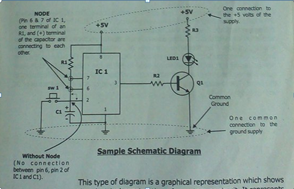
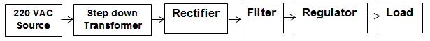
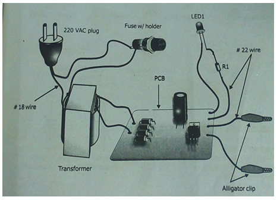
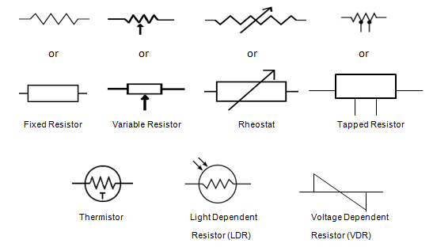

INTRODUCTION
Electricity, one of the basic forms of energy, is associated with electric charge, a property of certain elementary particles
such as electrons and protons, two of the basic particles that make up the atoms of all ordinary matter. Electric charges can be
stationary, as in static electricity, or moving, as in an electric current.
Electricity is an extremely versatile form f energy. It can be generated in many ways and form many different sources.
It can be sent almost instantaneously over long distances. Electricity can also be converted efficiently into other forms of energy,
and it can be stored. Because of this versatility, electricity plays a part in nearly every aspect of modern technology.
Electricity provides light, heat and mechanical power. It makes telephone, computers, televisions, and countless other necessities
and luxuries possible.
Sources Of Electricity
Hydroelectric dams generate electricity. Hydroelectric dams harness the energy of water released from the reservoir to turn hydraulic
turbines. The turbines convert the energy of the falling water into mechanical energy, which is used to power electric generators.
A damn generates electricity by releasing a controlled flow oh high-pressure water from a reservoir through a channel called the penstock,
where it spins the turbines that turns the generator, producing an electric current then passes through a ‘step up’ transformer that
changes it form a large current at a low voltage to a small current at high voltage. This current then goes over transmission lines to a
substation, where the voltage is reduced for customers. The water exits the dam through the draft tube.
Power
Power is the rate at which is done per unit of time. In electricity, the unit of power measurement is in watt, W, named after
James Watt who invested the steam engine. One watt is equivalent to work done in one second by one volt of electrical pressure in
moving one ampere. Hence, power in watts is equal to the product of electrical pressure in volts and current.
READING SCHEMATIC BLOCK AND PICTORIAL DIAGRAMS
Electrical and Electronics Engineers, Technologists and Technicians basically use three types of diagrams to help them understand
the Flow and function of a certain device. These Diagrams are Schematic, Block, and Pictorial diagrams.
Schematic Diagram
Electronic circuits are presented in schematic form. A schematic is actually a map showing the path the current takes through
the various components. Each component is represented by a symbol, usally with either a label or a value (or both). The arrangement
of the components on paper is chosen to make the function of the circuit clear,and usually only vaguely resembles the actual
construction of the device.

Sample Schematic Diagram
This type of diagramis a graphical representation which showsthe electrical construction of a system or circuit. It represents
the electrical components and connections of a circuit through different symbols. However, it does not give you the exact shape or
size of the entire circuit.
Block Diagram
The other commonly used way of expressing ideas in electronics is with a block diagram. It guides step by step operation of a
certain device. This type of diagrams uses rectangles or triangles to represent a component, a group of components or a group of
units and arrows to show the connection and the flow of a certain device. This diagram is very popular to beginners, hobbyists,
and enthusiasts in assembling projects and circuit specially when it comess to troubleshooting.

Sample Block Diagram of Regulated DC Power Supply
Let’s try to analyze the sample block diagram shown above. The DC power supply is the most common diagram and easy to understand.
We will start from left to right as the arrows indicate. The 220 VAC Source is supply voltage needed to operate the whole system or
circuit. The Step down Transformer reduces the 220 volts into smaller voltage. The Recifier converts AC voltage from the output of
the transformer into pulsating DC. This pulsating DC is not a pure DC because the riffle voltage ramaines in rectification so we need
to Filter the pulsating DC to make it pure. The regulator maintains constant output voltage to give better performance to the Load.
The load can be a DC motor, radio receiver, or any device that uses DC voltage supply.
Pictorial Diagram
Another form of diagram that is a help mostly to the beginners is the Pictorial diagram. It’s shows the pictures of actual
components and wiring connections. Although, it does not provide the exact size of the components, it shows the exact shape in
proportion to the actual one.

Sample Pictorial Diagram of Regulated DC Power Supply
Electronics Schematic Symbol

© Russel Mallari|Lorence Nozaleda|Jesus Bulay|Jefferson Legaspi